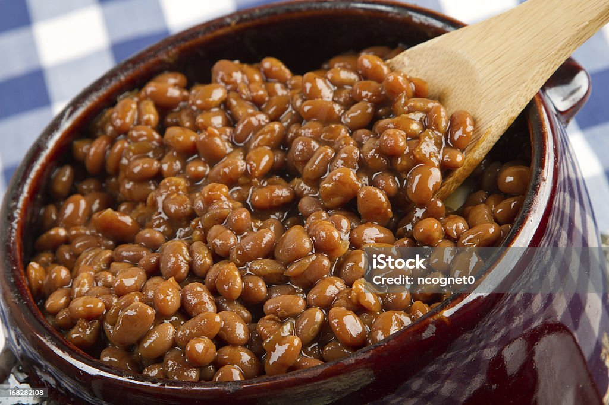

These are food which contains the six classes of food and can be grouped into micronutrients and macronutrients. The classes of food are carbohydrates, proteins, vitamins, fats and oil, minerals and water
PROTEINS
Protein is a macronutrient. It is one of the three nutrients found in food that the body needs in large amounts. It is essential for the maintenance and building of body tissues and muscle.
Beans
Egg
Fish
Milk
Nuts

VITAMINS
Vitamins are nutrients the body needs to develop and function properly.
Orange
Carrots
Cheese
sweet Potatoes
Pawpaw
MINERALS
Minerals are found in foods like cereals, bread, meat, fish, milk, dairy, nuts, fruit (especially dried fruit) and vegetables.
")